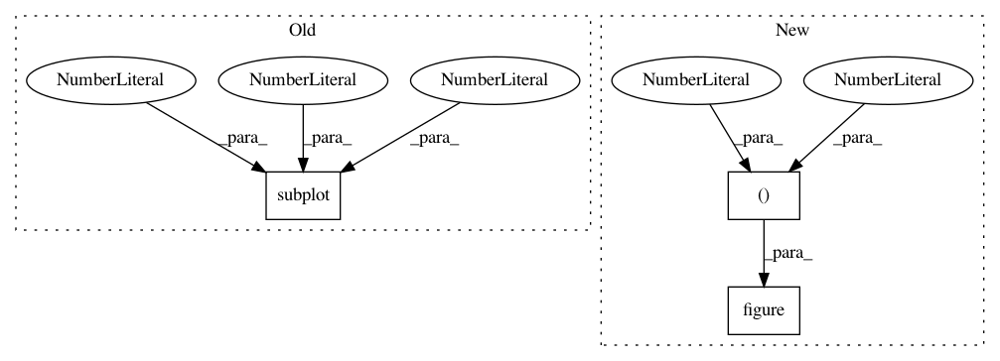

4b83c1070cebd0d996ba2cc69779dcb66d5d0032,experiments/parameters.py,,,#,12
Before Change
// y1 = np.cos(2 * np.pi * x1) * np.exp(-x1)
// y2 = np.cos(2 * np.pi * x2)
plt.subplot(2, 1, 1)
x1 = [0.01, 0.1, 1, 10, 100]
y1 = [1 - 0.6712, 1 - 0.7345, 1 - 0.8067, 1 - 0.8264, 1 - 0.8174]
plt.semilogx(x1, y1, "o-", label=r"$\beta$")
plt.xlabel(r"$\beta$")
After Change
// plt.subplot(1, 2, 1)
x1 = [0.01, 0.1, 1, 10, 100]
y1 = [1 - 0.6712, 1 - 0.7345, 1 - 0.8067, 1 - 0.8264, 1 - 0.8174]
plt.figure(figsize=(7, 2.5))
plt.semilogx(x1, y1, "o-", label=r"$\beta$")
plt.xlabel(r"$\beta$")
plt.ylabel("Error Rate")
plt.gca().set_ylim([0.15, 0.35])
In pattern: SUPERPATTERN
Frequency: 5
Non-data size: 3
Instances
Project Name: jhfjhfj1/autokeras
Commit Name: 4b83c1070cebd0d996ba2cc69779dcb66d5d0032
Time: 2018-05-29
Author: jhfjhfj1@gmail.com
File Name: experiments/parameters.py
Class Name:
Method Name:
Project Name: keras-team/autokeras
Commit Name: 29207539638be76123e2b9db9fd7cf54ee77c898
Time: 2018-05-25
Author: jin@tamu.edu
File Name: experiments/parameters.py
Class Name:
Method Name:
Project Name: rtavenar/tslearn
Commit Name: 4419f790314fd9ae0c01376a2e45767e10663a4e
Time: 2020-04-25
Author: romain.tavenard@univ-rennes2.fr
File Name: tslearn/docs/examples/metrics/plot_lb_keogh.py
Class Name:
Method Name: